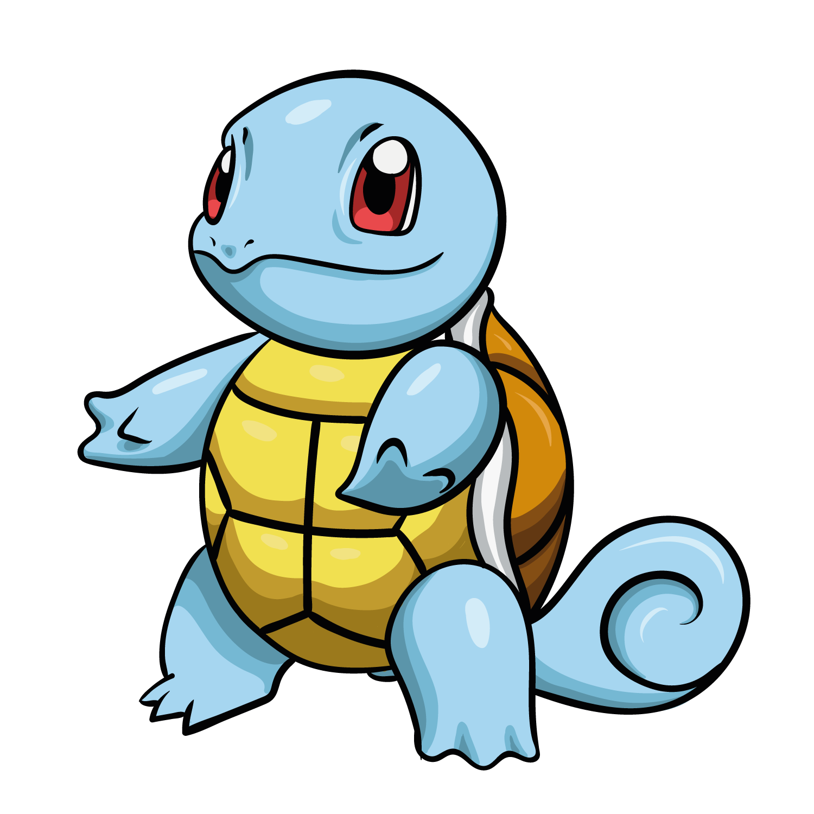

Carapuce

Les bébés Carapuce sont extrêmement vulnérables à la naissance, car leur carapace est toute molle. C'est pourquoi ils boivent régulièrement une eau riche en minéraux. Elle devient ensuite dure comme de la pierre. S'il est menacé, il se réfugie à l'intérieur et envoie un jet d'eau à son agresseur.